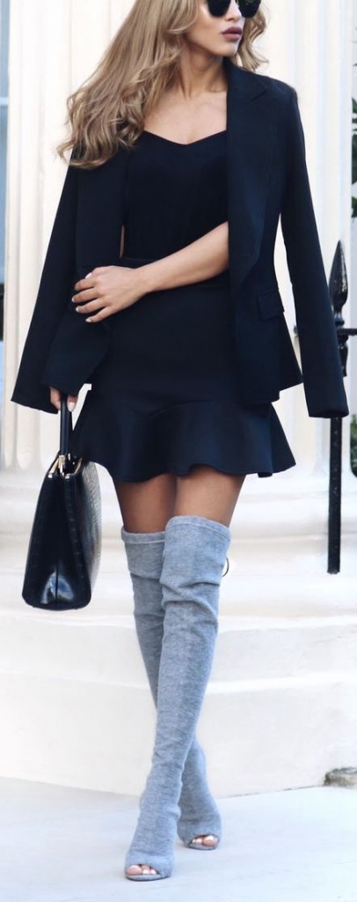

10 Summer-to-Fall Fashion Ideas
The warmer days are coming to an end, but in that awkward space between hot summer days and chilly autumn evenings calls for some transitional fashion options. So we found you some options – everything from slouchy chic to comfy sleek, so you have a look for any occasion.
1. This is a sleek but unexpected look that we can’t wait to try out. Great for a business meeting or a dinner – the tailored bodice gives way to a flirty peplum hemline, with a tailored blazer layered over. The thigh highs are very fall-chic, but the open toe will let you rock this look on the warmer days as well.
2. This is a Kardashian inspired look that is great as we head into the cooler months. Camo layers over a ripped cropped sweater in army colors, while ripped jeans are layered very high-waisted fishnets. Swap out for black opaque tights when it cools down.

3. This pink and grey look gives us a familiar neutral palette that’s appropriate for both sunny days and when the leaves change. The silhouettes are casual and comfy, but flattering – an oversized pink overcoat pairs with some simple white tennis shoes, dark grey skinnies, and a light grey, billowed t-shirt.
4. A structured, high waisted miniskirt prints smartly with a black turtleneck and a thick chain close to the neck. Black tights finish the look and will keep you warm A printed skirt is busy, so be sure to pair with simple stilettos or boots – but a chunky watch pairs great with a chain like that!
5. This is a bold look that might not work for everyone, but it brings us back to some much needed ‘90s nostalgia, and this gal wears it well. A fitted mustard turtleneck is layered under a deep-v spaghetti strap LBD and a neutral beret. Play around with the color of the turtleneck to make sure it compliments your skin tone.
6. This is a toned down, cozier alternative to the camo and fishnets look. A green cargo coat paired with black kicks, a color-blocked sweater, and fitted black joggers. Great with neutral nails like this babe styled it.
7. If you’re looking to turn heads, this transition outfit is the one. An oversized boyfriend blazer pairs with a short body-con dress – we loved this black and neutral geometric pattern, especially with these over the knee boots.
8. This super slouchy look is perfect for a bonfire by the beach or a picnic – fitted joggers and Stan Smiths pair with an off-teal heather tee and an open, shawl style cardigan. Maybe not great for the hotter days, but when it cools down in the evening, everyone will be jealous of this ultra cozy, easy look
9. Overalls are a favorite staple of the summer, so why not style it with a slouchy long sleeved sweater underneath when fall is around the bend? It’s best not to go very chunky with the knits since it might make you look bulky, but this type of weave is perfect, and looks complete with low or high top converse.
10. Lovers of tights and skirts will adore this ensemble. Burgundy, black and brown marry in this elevated Academia inspired look. A cropped sweater looks awesome with the skater skirt silhouette and cable-knit tights. The chunky leather ankle boots are the final touch that make us want to steal this look immediately.